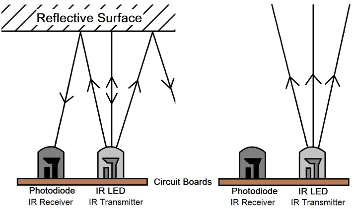
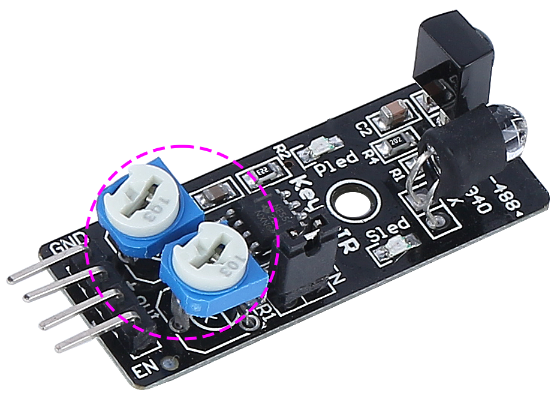

Note
Hello, welcome to the SunFounder Raspberry Pi & Arduino & ESP32 Enthusiasts Community on Facebook! Dive deeper into Raspberry Pi, Arduino, and ESP32 with fellow enthusiasts.
Why Join?
Expert Support: Solve post-sale issues and technical challenges with help from our community and team.
Learn & Share: Exchange tips and tutorials to enhance your skills.
Exclusive Previews: Get early access to new product announcements and sneak peeks.
Special Discounts: Enjoy exclusive discounts on our newest products.
Festive Promotions and Giveaways: Take part in giveaways and holiday promotions.
👉 Ready to explore and create with us? Click [here] and join today!
IR Obstacle Avoidcance Module
This is an infrared obstacle avoidance module that can detect the presence of objects ahead. It is commonly used in robots, automation systems, and other intelligent devices. Its detection range is 2cm to 40cm, and objects of different colors have different levels of reflectivity. Therefore, the darker the object, the shorter the detection distance.

Here are the pin definitions:
GND: Ground
+: Power supply, 3.3 ~ 5V DC.
Out: By default, it stays high and only goes low when it spots an obstacle.
EN: This enable pin decides when the module should work. By default, it is connected to GND, meaning the module is always on the job.
How it works?
This module contains a pair of IR transmitting and receiving components. Basically, the transmitter emits infrared light, when the emitted infrared light encounters an obstacle, it is reflected back and received by the receiver. Upon detection, the indicator lights up. After circuit processing, it outputs a low level signal.
{kind=link}

The EN pin’s low-level state activates the module, with the jumper cap securing the EN pin to the GND. To control the EN pin programmatically, remove the jumper cap.

There are two potentiometers on the module, one for adjusting the transmitting power and one for adjusting the transmitting frequency, and by adjusting these two potentiometers you can adjust its effective distance.
{kind=link}

Adjust the detection distance
The obstacle avoidance module’s detection range must be precisely calibrated for optimal performance, as default factory settings may not align with specific requirements.
Calibration involves the following steps:
Alignment of the Module: Start with the right-hand side obstacle avoidance module. Transportation can occasionally displace the alignment of the module’s infrared transmitter and receiver. They should be manually realigned to ensure accuracy.
Place an obstacle about 20 cm directly in front of the right module. The box in which our Rover kit came is a good choice for this! Now, turn the potentiometer on the module until the indicator light on the module just lights up. Then, keep moving the obstacle back and forth to check if the indicator light comes on at the desired distance. If the light doesn’t turn on at the correct distance or if it remains on without going out, you’ll need to adjust the other potentiometer.
Repeat the same process for another module.
Features
operating voltage: 3.3 V to 5 V
output: digital (on/off)
detection threshold: adjustable by 2 potentiometers
distance range: 2 to 40 cm
adjustment R5: frequency adjustment 38 kHz (already optimized)
adjustment R6: IR LED duty cycle adjustment (already optimized)
operating temperature: -10 °C to +50 °C
effective angle: 35°
I/O interface: 4 wire interface (- / + / S / EN)
dimensions: 45 x 16 x 10 mm
weight: 9 g